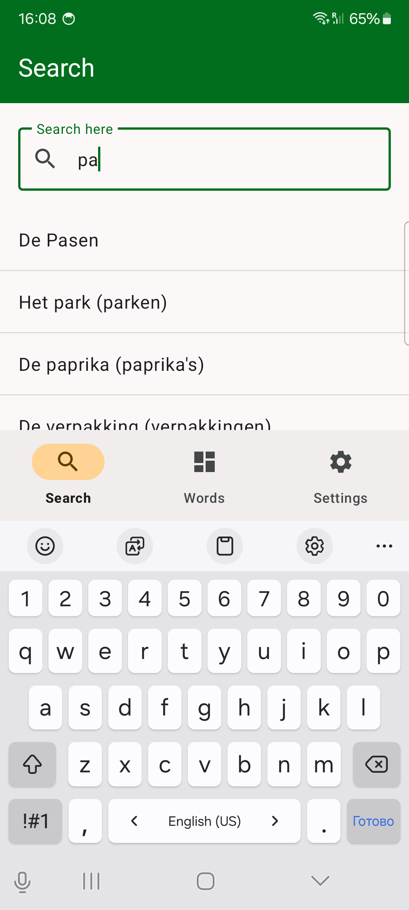
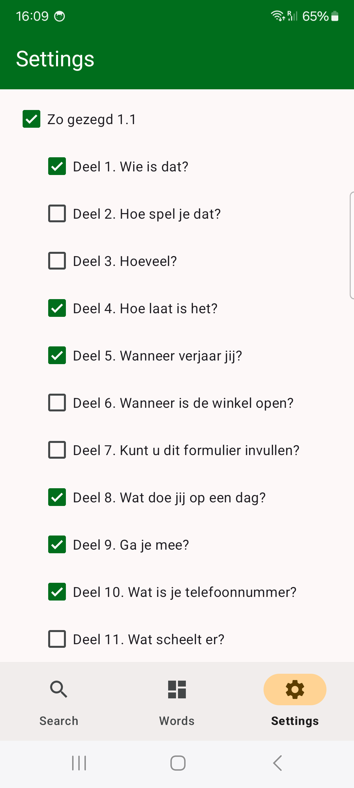
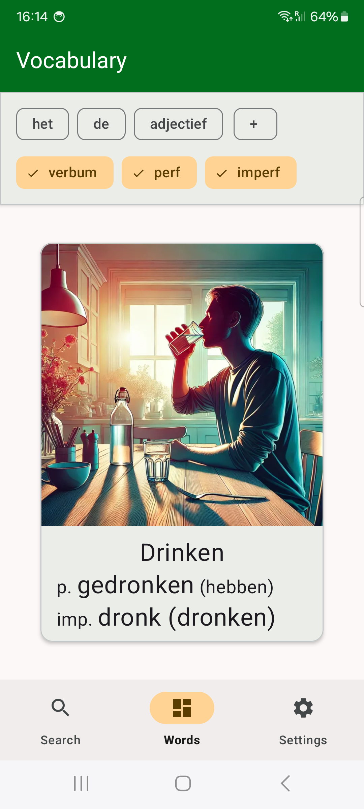

This app is designed for everyone learning Dutch with the Zo gezegd book. It helps you remember words, grammar, and verbs more effectively!
What can you do?
- Quickly find the word you need
- Easily find the right het/de word.
- Filter words by articles (het/de), verbs, or adjectives.
- Learn by book chapters
- Filter words by the chapters you're currently studying.
- Select only the chapters you're interested in.
- Master grammar effortlessly
- Learn when to use het and when to use de.
- Memorize the correct endings for adjectives.
- Practice verb forms: Perfectum and Imperfectum.
- Learn through images
- No need to memorize translations! Pictures help you create the right associations between words and objects.
Who is this app for?
- Students learning Dutch.
- Those studying with the Zo gezegd textbook.
- Anyone who wants to learn in a simple and fun way!


